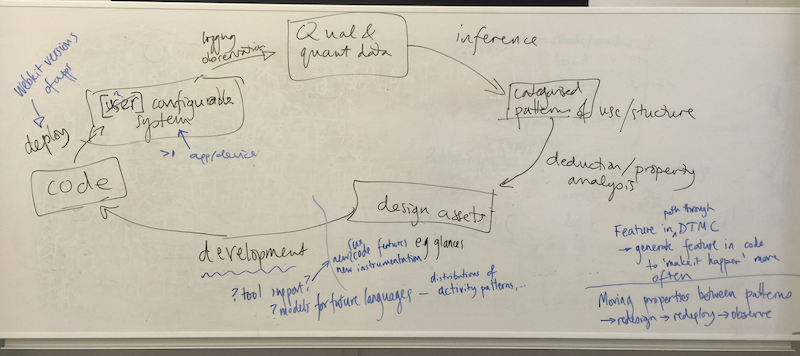

This project focuses on codifying, clarifying and deepening the programme’s holistic view spanning socio-technical process, individuals’ roles, tools and applications, and core data representations. It has a cross-project remit that involves drawing from and feeding back into all the other projects.
This project maintains an overarching view of a socio–technical and population–based design process. A key representation of this view is the "populations grand circle", a representation that we find ourselves coming back to every time we discuss our work as a whole. Here is the grand circle as of our 2015 all-hands meeting.
We are setting out how we can combine infrastructure, applications, tools, roles and sharing so as to collectively support changes in system design and use. We are gradually making this process more concrete, in terms of data representations, computational implementations and people’s interactions as designed and implemented in other projects in the programme—but combined in Experiences.
Recently, we have begun to treat our core representation—a population—as a temporal structure. We began with a concept of class as a probabilistic distribution of software structures—configurations of modules or components—and of the values assigned to those structures in the course of use. We are now exploring an approach focused on a populations as a set of temporal patterns in more general design assets, clustered using a ‘family resemblance’ metric. This more complex representational approach is triggering ideas for new practical tools and techniques, as well opening up new design concepts.
Part of our conceptual standpoint is that the kind of process of analysis and design described above will fail if it is treated as—positivistically idealised as— one that could be reduced to a purely technical process instead of positively supported, by design, as a socio–technical one. Human intervention and interpretation are needed at many stages, for example in choosing what to design initially, what qualitative and quantitative data to collect, what meanings to draw (in terms of user activities and choices) from combinations of qualitative and qualitative data, how to steer statistical inference, what questions one should ask using formal analysis and visualisation, what one should add to an app’s design assets as a result of data collection and analysis, and what design decisions and analytic conclusions one should make on the basis of those assets.
In the course of the last year, we have created a set of ethical guidelines for the kind of studies being conducted in Populations, and which are generally applicable for any large-scale mobile HCI deployment. Neglecting ethics can put a brake on our research, in that we need significant user numbers and usage durations for our work, but the issue has wider economic significance for commercial developers as well as social significance for the public at large.
These guidelines are based around a framework into which individual trials can be assessed, ethical concerns exposed, and system design features introduced to maintain ethical responsibility. In our CHI 2013 paper on this topic (see Publications), we categorised recent studies from HCI literature using our scheme, and explain the ethical concerns of each one. We also use the classification and associated guidelines in Experiences, as we design new apps but also in designing experiments using those apps. For example, we have used the Hungry Yoshi game and its associated infrastructure to explore two ethical aspects of large-scale deployments. In one experiment, we looked at the effect of different representations of users’ log data, in particular location data: comparing textual and map-based feedback of logged location data. We interrupted users during game play with reminders that we are logging their data, showing users different forms of recorded data, and then continued to assess their ongoing level of comfort at taking part in our studies.
We have also been working on general-purpose guidelines for large scale ‘app store’ style trials, related to ethical trial methodology. The hybrid methods described in our CHI 2012 paper (see Publications), centred on a score prediction game for the FIFA World Cup, were specifically designed to address such concerns but still leave open some issues of informed consent. By remotely recruiting participants, evaluators are generally unable to interact directly with participants, and may find it more difficult to assure themselves that truly informed consent has been obtained with regard to the trial procedure. Standard ‘Terms and Conditions’ pages presented on first launch of an application may not go far enough to inform users of our intent and our use of their data. For example, in prior Hungry Yoshi studies, we found that 70% of users had not understood that they were part of a trial.
{kind=link}
{kind=link}